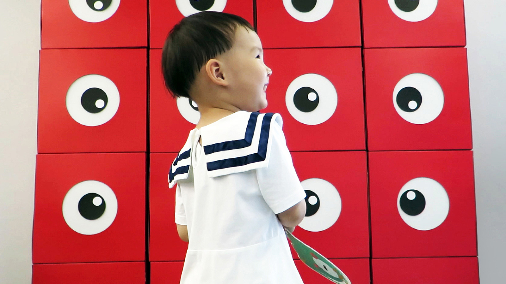
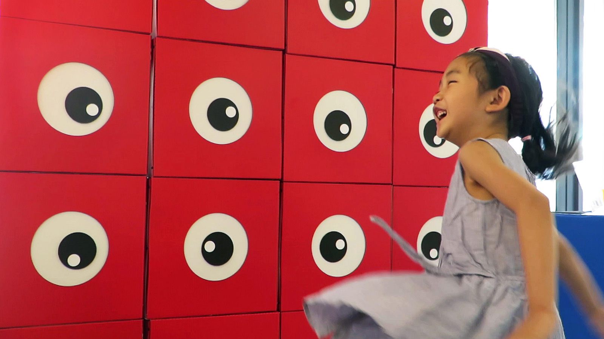
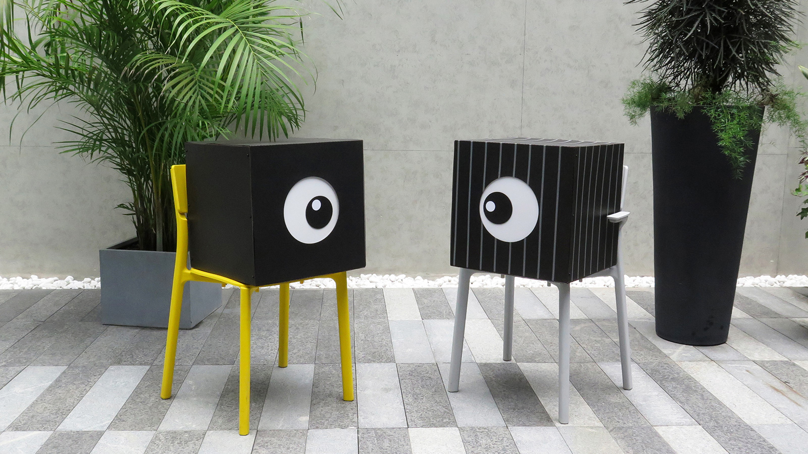
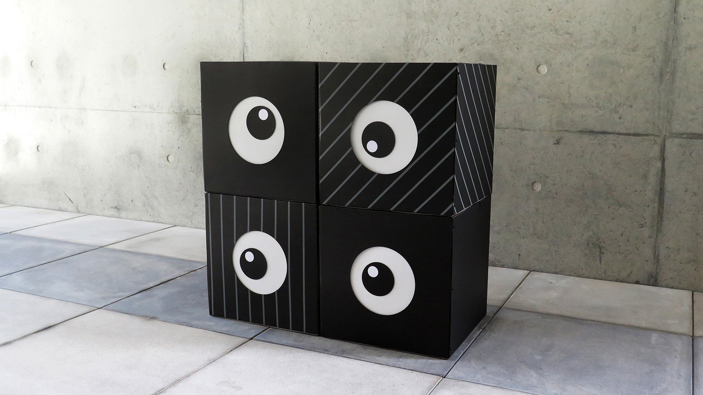
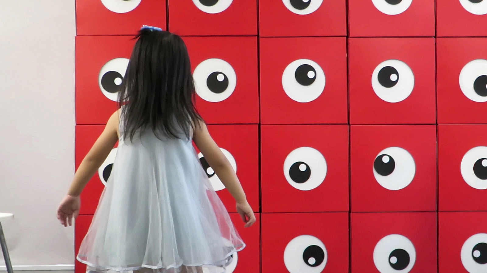
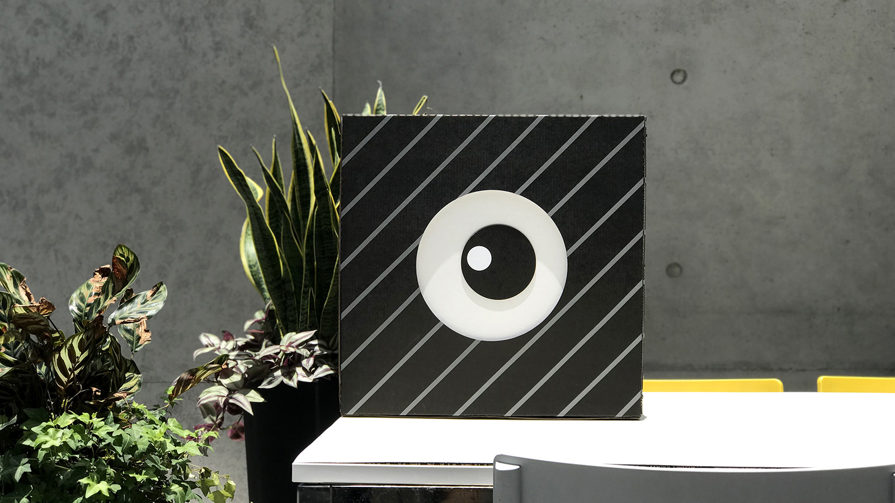

Eyeballz Cube / 眼球立方
眼球立方(Eyeballz Cube), 2018
眼球立方是一个模块化的动态艺术装置，模块化的设计使得它能以灵活的排列组合占据不同类型的空间。每个眼球立方独立而随机地运动，正如我们每个人的注意力随时随地被不同事物所吸引。当许许多多个眼球立方层叠在一起时，它们快速而稍显混乱的运动呈现了一种无序的美感，正如我们充斥着喧嚣与繁杂的社会。
眼球立方也可以拓展成具有交互功能的动态装置。通过配备摄像头和定制软件，眼球立方可以随着人体的运动而运动，形成“一直在看你”的效果。





